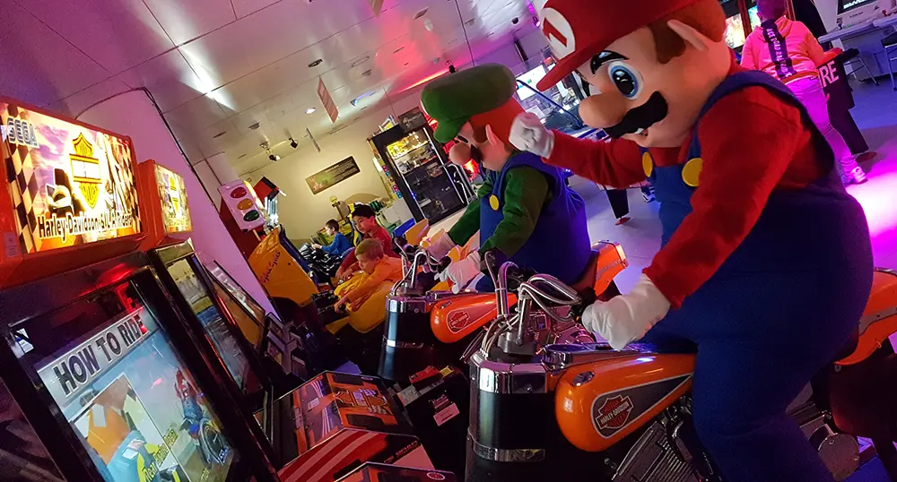

Vijf feiten over Zoetermeer:

Het Nationaal Videogame Museum is 'the place to be' voor iedereen die meer wil weten (én beleven) over de geschiedenis, maatschappelijke en culturele kant van videogames.
Het museum laat haar bezoekers ook de games van morgen ervaren.
Gamers van jong tot oud zijn welkom om te spelen, ontdekken, leren en ervaringen online te delen.
bron: www.nationaalvideogamemuseum.nl
Met 4 pistes, de steilste indoorpiste van Europa en 10 skiliften biedt SnowWorld Zoetermeer een unieke beleving op echte sneeuw.
Kom langs en ervaar het zelf!